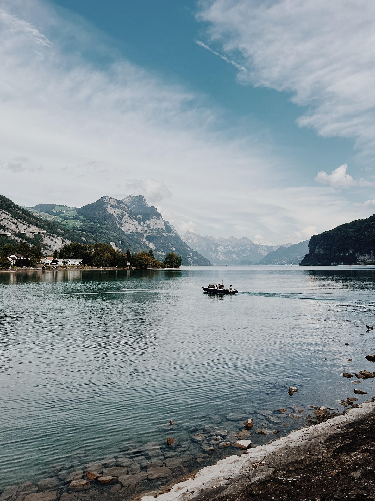
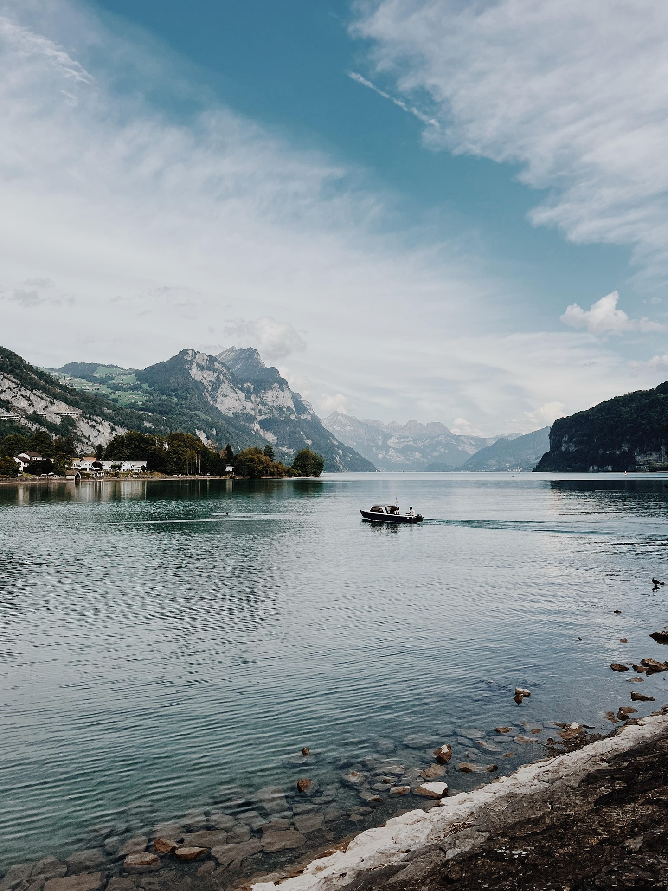

Welcome To Your Next Adventure Holiday
The Alps Await
We aim to provide the best Alpine experience for you. A fishing holiday wether solo or with family and friends is a great way to relax and enjoy the stunning scenery of the French Alps. The itinerary below is a suggestion, but we can tailor it to your needs.
Day 1: Arrival & Fishing at Lac d’Annecy Fly into Geneva Airport (GVA), drive to Annecy (40 mins) Set up & fish in Lac d’Annecy, famous for pike, perch, and lake trout Rent a small fishing boat or fish from the shore near Talloires or Sévrier Enjoy a lakeside dinner
Day 2: River Fishing on the Fier & Explore Annecy Morning Fishing on the Fier River Fly fishing for wild brown trout & grayling (permit: €15/day) Best spots: Lovagny Gorge & Fier Valley Afternoon: Explore Annecy’s Old Town & canals Optional: Rent a paddle boat
Day 3: Travel to Chamonix & Fish in Lac des Gaillands Drive Annecy → Chamonix (1.5 hours) Activities: Fish in Lac des Gaillands, a small but scenic alpine lake (rainbow trout, perch) Explore Chamonix town & Aiguille du Midi Dinner at a Savoyarde restaurant
Day 4: Alpine Fishing at Lac Blanc Hike & Fish at Lac Blanc (2,352m altitude) A 2-hour hike from Chamonix leads to Lac Blanc, a stunning high-altitude lake. Fish for Arctic char & brook trout in pristine waters. Enjoy a packed picnic lunch
Day 5: Lac Léman (Lake Geneva) & Montreux Visit Drive Chamonix → Evian-les-Bains (1.5 hours) Fishing on Lac Léman Rent a boat or fish from the shore near Thonon-les-Bains or Evian Target pike, perch, lake trout, and Arctic char Afternoon: Explore Montreux (Switzerland) or visit Château de Chillon
Day 6: Fishing at Lac de Montriond & Relaxation Drive to Morzine (~1-hour drive) Fishing in Lac de Montriond Brown trout, Arctic char, & rainbow trout in a beautiful alpine lake Rent a kayak or relax lakeside Afternoon: Visit Cascade d’Ardent waterfall or relax at a lakeside café
Day 7: Last Fishing Session & Departure Return to Geneva (1.5-hour drive) Morning Options: Fish in Dranse River (near Thonon-les-Bains) for wild trout & grayling Last-minute shopping for local cheeses & wine Afternoon: Return rental gear & head to Geneva Airport for departure
The trip will have an approximate cost of €1,900 per person, including accommodation, car rental, fishing permits, and meals. This is a rough estimate and can vary based on personal preferences and choices.
Fishing Tips for the French Alps Permits Required – Get a Carte de Pêche (fishing license) at www.cartedepeche.fr and local fishing rules. Best Fishing Gear – Bring a light spinning rod & fly fishing gear for trout & perch. Catch & Release – Some lakes require catch & release; check local rules. Weather Check – Alpine weather can change fast; bring rain gear & warm clothes.

 
